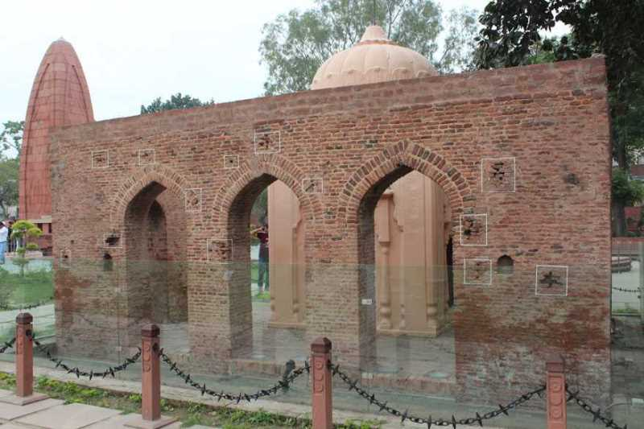

The entrance to Jallianwala Bagh is via a narrow passage, the same passage that was the only entry and exit point at the time of the massacre and the same route that General Dyer and his troops took to reach the grounds. At the entrance is a statue of Udham Singh. Once entered, some old trees can be seen in the garden with some buildings at the back. With the words 'Vande Mataram', a flame titled Amar Jyoti (Eternal Flame) is seen burning to the right under a domed meditation area.
.jpg)
The 'Martyrs Well' is surrounded by the Martyr's memorial, a large structure with a sign giving a figure of
"120" as the number of bodies that were recovered from the well. It was designed by American architect Benjamin Polk and inaugurated in 1961.
A number of the bullet holes in the walls are preserved.One of the walls with bullet holes has a plaque reading:

The wall has its own historic significance as it has thirty-six bullet marks which can be easily seen at present and these
were fired into the crowd by the order of General Dyer. Moreover, no warning was given to disperse before Dyer opened fire
which was gathered here against the Rowlatt Act. One Thousand Six Hundred and Fifty Rounds were fired .

The well in Jallianwala Bagh is known as the Martyr's Well and is a significant part of the Jallianwala Bagh memorial in Amritsar, Punjab, India. The well is a solemn reminder of the tragic Jallianwala Bagh massacre that took place there on April 13, 1919. It is believed that many people jumped into the well to escape the firing by British Indian Army troops. The well is still preserved and can be visited by tourists as a symbol of the sacrifices made by Indian nationalists in the struggle for independence. Over 120 bodies were pulled out of the well after the massacre. Today, the Jallianwala Bagh is a national monument and a popular tourist destination in India.

Amar Jyoti, also known as the Flame of Eternal Liberty, is a memorial flame that is located in the Jallianwala Bagh memorial in Amritsar, Punjab, India. It was established in memory of the victims of the Jallianwala Bagh massacre that took place on 13 April 1919. The flame burns constantly as a symbol of the sacrifice made by the Indian nationalists who lost their lives fighting for freedom. The inauguration of the memorial flame took place on 13 April 1961, on the 42nd anniversary of the massacre, by the then Prime Minister of India, Jawaharlal Nehru. Today, Amar Jyoti is a significant part of the Jallianwala Bagh memorial and a reminder of the importance of freedom and independence.